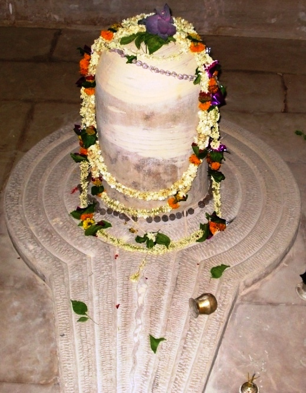

<?xml version="1.0" encoding="UTF-8"?><rss version="2.0"
	xmlns:content="http://purl.org/rss/1.0/modules/content/"
	xmlns:wfw="http://wellformedweb.org/CommentAPI/"
	xmlns:dc="http://purl.org/dc/elements/1.1/"
	xmlns:atom="http://www.w3.org/2005/Atom"
	xmlns:sy="http://purl.org/rss/1.0/modules/syndication/"
	xmlns:slash="http://purl.org/rss/1.0/modules/slash/"
	>

<channel>
	<title>Eeshaneshwar &#8211; Varanasi Temples</title>
	<atom:link href="index.html" rel="self" type="application/rss+xml" />
	<link>../../../../../index.html</link>
	<description>Temples of Varanasi as referred to in Kashi Khand</description>
	<lastBuildDate>Thu, 19 Jun 2025 05:16:46 +0000</lastBuildDate>
	<language>en-US</language>
	<sy:updatePeriod>hourly</sy:updatePeriod>
	<sy:updateFrequency>1</sy:updateFrequency>
	<generator>https://wordpress.org/?v=4.6.29</generator>
	<item>
		<title>EESHANESHWAR</title>
		<link>../../../../../shiva-temples/eeshaneshwar/index.html</link>
		<pubDate>Mon, 10 May 2010 02:36:27 +0000</pubDate>
		<dc:creator><![CDATA[admin]]></dc:creator>
				<category><![CDATA[Eeshaneshwar]]></category>
		<category><![CDATA[Other Shiva Temples (E-K)]]></category>
		<category><![CDATA[Shiva Temples]]></category>
		<category><![CDATA[fourteen]]></category>
		<category><![CDATA[rebirth]]></category>
		<category><![CDATA[www.eeshaneshwar.com]]></category>

		<guid isPermaLink="false">../../../../../p=382.html</guid>
		<description><![CDATA[According to Kashi Khand, Chapter 14, there was a religious place called Eeshan Puri where Lord Shiva’s devotees resided.  Eleven of the staunch devotees of Lord Shiva reached Kashi,  installed a Shiv Ling called Eeshaneshwar and started praying that Ling.  They offered special prayers on Ashtami and Chaturdasi days (eighth and fourteenth day respectively after [&#8230;]]]></description>
				<content:encoded><![CDATA[<p>According to Kashi Khand, Chapter 14, there was a religious place called Eeshan Puri where Lord Shiva’s devotees resided.  Eleven of the staunch devotees of Lord Shiva reached Kashi,  installed a Shiv Ling called Eeshaneshwar and started praying that Ling.  They offered special prayers on Ashtami and Chaturdasi days (eighth and fourteenth day respectively after Amavasya and Poornima).</p>
<p>Kashi Khand states that if a devotee undertakes fast on Chaturdasi, remains awake the whole of the night, praying to Eeshaneshwar, he will be blessed with all happiness and will attain Moksha (release from rebirth).</p>
<p></p>
<p style="text-align: center;"><strong>(EESHANESHWAR)</strong></p>
<p>&nbsp;</p>
<p><strong>&#8212;&#8212;&#8212;&#8212;&#8212;&#8212;&#8212;&#8212;&#8212;&#8212;&#8212;&#8212;&#8212;&#8212;&#8212;&#8212;&#8212;&#8212;&#8212;&#8212;&#8212;&#8212;&#8212;&#8212;&#8212;&#8212;&#8212;&#8212;&#8212;&#8212;&#8212;&#8212;&#8212;&#8212;-</strong></p>
<p><strong> </strong></p>
<p><span style="text-decoration: underline;"><strong>Kashi Khand, Chapter 69, Shlok 94</strong></span></p>
<p><strong> </strong></p>
<p><strong>ईशानेशं समभ्यर्च्य स्नात्वोत्तरवहाम्भसि </strong></p>
<p><strong>वसेदीशाननगरे ईशानसदृश्प्रभ:</strong></p>
<p>&nbsp;</p>
<p><strong>A devotee who takes bath in the stream of Uttarvaahini (River Ganga in Kashi) and worships Eeshaneshwar Ling will become powerful/influential like Eeshan (one form of Lord Shiva) and attain residence in Eeshan Lok.  </strong></p>
<p><strong> </strong></p>
<p><strong>&#8212;&#8212;&#8212;&#8212;&#8212;&#8212;&#8212;&#8212;&#8212;&#8212;&#8212;&#8212;&#8212;&#8212;&#8212;&#8212;&#8212;&#8212;&#8212;&#8212;&#8212;&#8212;&#8212;&#8212;&#8212;&#8212;&#8212;&#8212;&#8212;&#8212;&#8212;&#8212;&#8212;&#8212;&#8212;</strong></p>
<p>&nbsp;</p>
<p><strong><span style="text-decoration: underline;">LOCATION OF EESHANESHWAR</span></strong></p>
<p>Eeshaneshwar is located at Deepak Cinema compound at Bansphatak.  The Cinema  hall has been demolished and a Shopping Mall is under contruction.  The Mall authorities are preserving the temple and they were kind enough to allow the compiler to offer prayers at this temple.</p>
<p>Enquiries revealed that presently darshan is allowed only through the wall from the by-lane nearby.</p>
<p>It is expected that once the construction of Mall is fully completed, darshan will become easy as the devotees will have easy access to the temple.</p>
<p><strong><span style="text-decoration: underline;">TYPE OF POOJA</span></strong></p>
<p>Presently the temple is open from morning to evening.  After the Mall becomes fully operational, there may be some timings attached to the temple.  Devotees can perform pooja on their own.</p>
]]></content:encoded>
			</item>
	</channel>
</rss>
